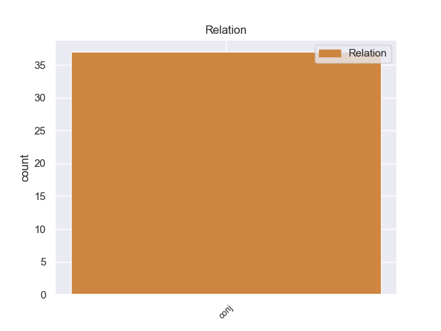
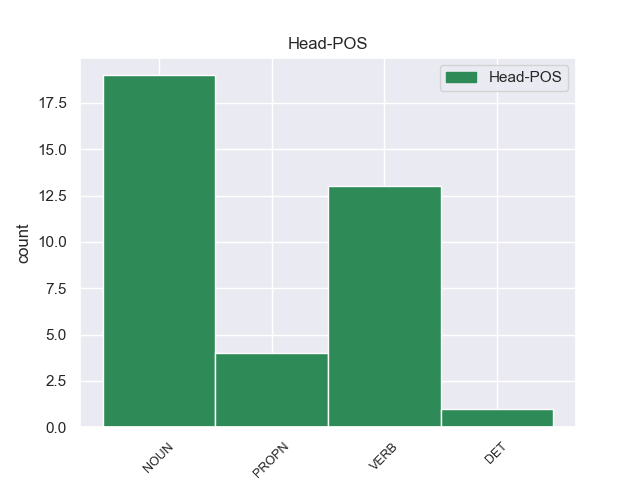
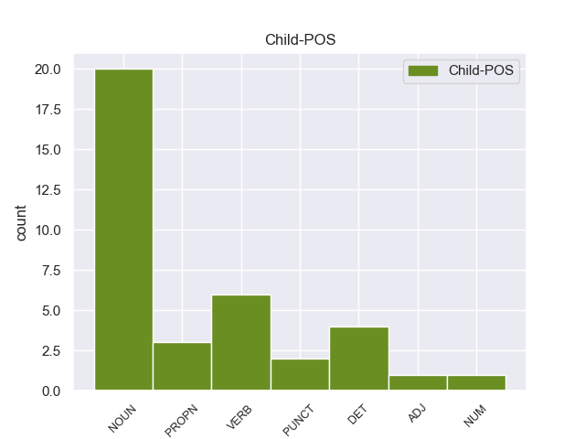

Distribution of features within this leaf



Agreement Rules sorted by frequency.
- When the dependent token is the conjunct(conj) of the head token, and the head token is VERB
1 Σύμφωνα _ _ _ _ 0 _ _ _
2 με _ _ _ _ 0 _ _ _
3 τους _ _ _ _ 0 _ _ _
4 αναλυτές αναλυτές VERB _ Case=Acc|Gender=Fem|Number=Sing 0 _ _ _
5 , _ _ _ _ 0 _ _ _
6 « _ _ _ _ 0 _ _ _
7 ο _ _ _ _ 0 _ _ _
8 Μιτ _ _ _ _ 0 _ _ _
9 Ρόμνεϊ _ _ _ _ 0 _ _ _
10 αναμένεται _ _ _ _ 0 _ _ _
11 να _ _ _ _ 0 _ _ _
12 κερδίσει _ _ _ _ 0 _ _ _
13 τις _ _ _ _ 0 _ _ _
14 εκλογές _ _ _ _ 0 _ _ _
15 των _ _ _ _ 0 _ _ _
16 βορειοανατολικών _ _ _ _ 0 _ _ _
17 πολιτειών _ _ _ _ 0 _ _ _
18 των _ _ _ _ 0 _ _ _
19 ΗΠΑ _ _ _ _ 0 _ _ _
20 , _ _ _ _ 0 _ _ _
21 ενώ _ _ _ _ 0 _ _ _
22 ο _ _ _ _ 0 _ _ _
23 Ρικ _ _ _ _ 0 _ _ _
24 Σαντόρουμ _ _ _ _ 0 _ _ _
25 μπορεί _ _ _ _ 0 _ _ _
26 να _ _ _ _ 0 _ _ _
27 πάρει _ _ _ _ 0 _ _ _
28 ρεβάνς ρεβάνς NOUN _ Case=Acc|Gender=Fem|Number=Sing 4 conj _ _
29 σ _ _ _ _ 0 _ _ _
30 τον _ _ _ _ 0 _ _ _
31 Νότο _ _ _ _ 0 _ _ _
32 » _ _ _ _ 0 _ _ _
33 . _ _ _ _ 0 _ _ _
1 Ο _ _ _ _ 0 _ _ _
2 Μιτ _ _ _ _ 0 _ _ _
3 Ρόμνεϊ _ _ _ _ 0 _ _ _
4 έλαβε _ _ _ _ 0 _ _ _
5 το _ _ _ _ 0 _ _ _
6 45% 45% NUM _ Case=Acc|Definite=Def|Gender=Fem|Number=Sing|PronType=Art 8 conj _ _
7 των _ _ _ _ 0 _ _ _
8 ψήφων ψήφω NOUN _ Case=Gen|Gender=Fem|Number=Sing 0 _ _ _
9 , _ _ _ _ 0 _ _ _
10 δέκα _ _ _ _ 0 _ _ _
11 ποσοστιαίες _ _ _ _ 0 _ _ _
12 μονάδες _ _ _ _ 0 _ _ _
13 περισσότερες _ _ _ _ 0 _ _ _
14 από _ _ _ _ 0 _ _ _
15 τον _ _ _ _ 0 _ _ _
16 Ρικ _ _ _ _ 0 _ _ _
17 Σαντόρουμ _ _ _ _ 0 _ _ _
18 . _ _ _ _ 0 _ _ _
1 Η _ _ _ _ 0 _ _ _
2 διαμάχη _ _ _ _ 0 _ _ _
3 μεταξύ _ _ _ _ 0 _ _ _
4 Ρωσίας Ρωσία PROPN PROPN Case=Gen|Gender=Fem|Number=Sing 0 _ _ _
5 και _ _ _ _ 0 _ _ _
6 Ουκρανίας Ουκρανία PROPN PROPN Case=Gen|Gender=Fem|Number=Sing 4 conj _ _
7 για _ _ _ _ 0 _ _ _
8 το _ _ _ _ 0 _ _ _
9 μέλλον _ _ _ _ 0 _ _ _
10 της _ _ _ _ 0 _ _ _
11 Κριμαίας _ _ _ _ 0 _ _ _
12 κορυφώνεται _ _ _ _ 0 _ _ _
13 και _ _ _ _ 0 _ _ _
14 οι _ _ _ _ 0 _ _ _
15 Τάταροι _ _ _ _ 0 _ _ _
16 , _ _ _ _ 0 _ _ _
17 άλλη _ _ _ _ 0 _ _ _
18 μια _ _ _ _ 0 _ _ _
19 απ’ _ _ _ _ 0 _ _ _
20 τις _ _ _ _ 0 _ _ _
21 μειονότητες _ _ _ _ 0 _ _ _
22 που _ _ _ _ 0 _ _ _
23 ζουν _ _ _ _ 0 _ _ _
24 σ _ _ _ _ 0 _ _ _
25 την _ _ _ _ 0 _ _ _
26 επίμαχη _ _ _ _ 0 _ _ _
27 περιοχή _ _ _ _ 0 _ _ _
28 , _ _ _ _ 0 _ _ _
29 βρίσκονται _ _ _ _ 0 _ _ _
30 σε _ _ _ _ 0 _ _ _
31 μειονεκτική _ _ _ _ 0 _ _ _
32 θέση _ _ _ _ 0 _ _ _
33 . _ _ _ _ 0 _ _ _
1 Το _ _ _ _ 0 _ _ _
2 1794 _ _ _ _ 0 _ _ _
3 οι _ _ _ _ 0 _ _ _
4 αγιορείτες _ _ _ _ 0 _ _ _
5 μοναχοί _ _ _ _ 0 _ _ _
6 Νύμφωνας _ _ _ _ 0 _ _ _
7 Χίος _ _ _ _ 0 _ _ _
8 και _ _ _ _ 0 _ _ _
9 Γρηγόριος _ _ _ _ 0 _ _ _
10 Χατζησταμάτης _ _ _ _ 0 _ _ _
11 ίδρυσαν ο DET _ Case=Acc|Gender=Fem|Number=Sing 0 _ _ _
12 την _ _ _ _ 0 _ _ _
13 Ιερά _ _ _ _ 0 _ _ _
14 Μονή _ _ _ _ 0 _ _ _
15 της _ _ _ _ 0 _ _ _
16 Ευαγγελίστριας _ _ _ _ 0 _ _ _
17 , _ _ _ _ 0 _ _ _
18 η _ _ _ _ 0 _ _ _
19 οποία _ _ _ _ 0 _ _ _
20 τότε _ _ _ _ 0 _ _ _
21 ονομαζόταν _ _ _ _ 0 _ _ _
22 " _ _ _ _ 0 _ _ _
23 Νέο _ _ _ _ 0 _ _ _
24 Μοναστήρι _ _ _ _ 0 _ _ _
25 " _ _ _ _ 0 _ _ _
26 για _ _ _ _ 0 _ _ _
27 να _ _ _ _ 0 _ _ _
28 ξεχωρίζει _ _ _ _ 0 _ _ _
29 από _ _ _ _ 0 _ _ _
30 τα _ _ _ _ 0 _ _ _
31 παλαιότερα παλαιότερα ADJ _ Case=Acc|Gender=Fem|Number=Sing 11 conj _ _
32 . _ _ _ _ 0 _ _ _
Disagree Examples:
1 Θα _ _ _ _ 0 _ _ _
2 εργαστούμε _ _ _ _ 0 _ _ _
3 , _ _ _ _ 0 _ _ _
4 και _ _ _ _ 0 _ _ _
5 δεσμεύομαι _ _ _ _ 0 _ _ _
6 γι' _ _ _ _ 0 _ _ _
7 αυτό _ _ _ _ 0 _ _ _
8 σήμερα _ _ _ _ 0 _ _ _
9 σ _ _ _ _ 0 _ _ _
10 την _ _ _ _ 0 _ _ _
11 Ομάδα _ _ _ _ 0 _ _ _
12 μου _ _ _ _ 0 _ _ _
13 , _ _ _ _ 0 _ _ _
14 για _ _ _ _ 0 _ _ _
15 να _ _ _ _ 0 _ _ _
16 εκπληρωθούν _ _ _ _ 0 _ _ _
17 αυτοί _ _ _ _ 0 _ _ _
18 οι _ _ _ _ 0 _ _ _
19 στόχοι _ _ _ _ 0 _ _ _
20 σ _ _ _ _ 0 _ _ _
21 το _ _ _ _ 0 _ _ _
22 μέλλον _ _ _ _ 0 _ _ _
23 και _ _ _ _ 0 _ _ _
24 θα _ _ _ _ 0 _ _ _
25 το _ _ _ _ 0 _ _ _
26 κάνουμε _ _ _ _ 0 _ _ _
27 μαζί _ _ _ _ 0 _ _ _
28 με _ _ _ _ 0 _ _ _
29 την _ _ _ _ 0 _ _ _
30 Επιτροπή επιτροπή NOUN NOUN Case=Acc|Gender=Fem|Number=Sing 0 _ _ _
31 και _ _ _ _ 0 _ _ _
32 το _ _ _ _ 0 _ _ _
33 Συμβούλιο συμβούλιο NOUN NOUN Case=Acc|Gender=Neut|Number=Sing 30 conj _ SpaceAfter=No
34 . _ _ _ _ 0 _ _ _
1 Με _ _ _ _ 0 _ _ _
2 τον _ _ _ _ 0 _ _ _
3 τρόπο _ _ _ _ 0 _ _ _
4 αυτόν _ _ _ _ 0 _ _ _
5 δεν _ _ _ _ 0 _ _ _
6 υπονομεύονται _ _ _ _ 0 _ _ _
7 μόνο _ _ _ _ 0 _ _ _
8 οι _ _ _ _ 0 _ _ _
9 στοχοθεσίες _ _ _ _ 0 _ _ _
10 της _ _ _ _ 0 _ _ _
11 Συνθήκης _ _ _ _ 0 _ _ _
12 , _ _ _ _ 0 _ _ _
13 όπως _ _ _ _ 0 _ _ _
14 για _ _ _ _ 0 _ _ _
15 παράδειγμα _ _ _ _ 0 _ _ _
16 η _ _ _ _ 0 _ _ _
17 ενσωμάτωση _ _ _ _ 0 _ _ _
18 της _ _ _ _ 0 _ _ _
19 προστασίας _ _ _ _ 0 _ _ _
20 του _ _ _ _ 0 _ _ _
21 περιβάλλοντος _ _ _ _ 0 _ _ _
22 σε _ _ _ _ 0 _ _ _
23 όλους _ _ _ _ 0 _ _ _
24 τους _ _ _ _ 0 _ _ _
25 τομείς _ _ _ _ 0 _ _ _
26 της _ _ _ _ 0 _ _ _
27 πολιτικής _ _ _ _ 0 _ _ _
28 και _ _ _ _ 0 _ _ _
29 η _ _ _ _ 0 _ _ _
30 πολιτική _ _ _ _ 0 _ _ _
31 της _ _ _ _ 0 _ _ _
32 αειφόρου _ _ _ _ 0 _ _ _
33 ανάπτυξης _ _ _ _ 0 _ _ _
34 , _ _ _ _ 0 _ _ _
35 αλλά _ _ _ _ 0 _ _ _
36 περιορίζεται _ _ _ _ 0 _ _ _
37 επίσης _ _ _ _ 0 _ _ _
38 η _ _ _ _ 0 _ _ _
39 αυτονομία _ _ _ _ 0 _ _ _
40 και _ _ _ _ 0 _ _ _
41 η _ _ _ _ 0 _ _ _
42 δημοκρατία _ _ _ _ 0 _ _ _
43 σ _ _ _ _ 0 _ _ _
44 τους _ _ _ _ 0 _ _ _
45 δήμους δήμος NOUN NOUN Case=Acc|Gender=Masc|Number=Plur 0 _ _ _
46 , _ _ _ _ 0 _ _ _
47 τις _ _ _ _ 0 _ _ _
48 κοινότητες κοινότητα NOUN NOUN Case=Acc|Gender=Fem|Number=Plur 45 conj _ SpaceAfter=No
49 , _ _ _ _ 0 _ _ _
50 τις _ _ _ _ 0 _ _ _
51 περιφέρειες _ _ _ _ 0 _ _ _
52 και _ _ _ _ 0 _ _ _
53 τα _ _ _ _ 0 _ _ _
54 ομοσπονδιακά _ _ _ _ 0 _ _ _
55 κρατίδια _ _ _ _ 0 _ _ _
56 . _ _ _ _ 0 _ _ _
1 Με _ _ _ _ 0 _ _ _
2 τον _ _ _ _ 0 _ _ _
3 τρόπο _ _ _ _ 0 _ _ _
4 αυτόν _ _ _ _ 0 _ _ _
5 δεν _ _ _ _ 0 _ _ _
6 υπονομεύονται _ _ _ _ 0 _ _ _
7 μόνο _ _ _ _ 0 _ _ _
8 οι _ _ _ _ 0 _ _ _
9 στοχοθεσίες _ _ _ _ 0 _ _ _
10 της _ _ _ _ 0 _ _ _
11 Συνθήκης _ _ _ _ 0 _ _ _
12 , _ _ _ _ 0 _ _ _
13 όπως _ _ _ _ 0 _ _ _
14 για _ _ _ _ 0 _ _ _
15 παράδειγμα _ _ _ _ 0 _ _ _
16 η _ _ _ _ 0 _ _ _
17 ενσωμάτωση _ _ _ _ 0 _ _ _
18 της _ _ _ _ 0 _ _ _
19 προστασίας _ _ _ _ 0 _ _ _
20 του _ _ _ _ 0 _ _ _
21 περιβάλλοντος _ _ _ _ 0 _ _ _
22 σε _ _ _ _ 0 _ _ _
23 όλους _ _ _ _ 0 _ _ _
24 τους _ _ _ _ 0 _ _ _
25 τομείς _ _ _ _ 0 _ _ _
26 της _ _ _ _ 0 _ _ _
27 πολιτικής _ _ _ _ 0 _ _ _
28 και _ _ _ _ 0 _ _ _
29 η _ _ _ _ 0 _ _ _
30 πολιτική _ _ _ _ 0 _ _ _
31 της _ _ _ _ 0 _ _ _
32 αειφόρου _ _ _ _ 0 _ _ _
33 ανάπτυξης _ _ _ _ 0 _ _ _
34 , _ _ _ _ 0 _ _ _
35 αλλά _ _ _ _ 0 _ _ _
36 περιορίζεται _ _ _ _ 0 _ _ _
37 επίσης _ _ _ _ 0 _ _ _
38 η _ _ _ _ 0 _ _ _
39 αυτονομία _ _ _ _ 0 _ _ _
40 και _ _ _ _ 0 _ _ _
41 η _ _ _ _ 0 _ _ _
42 δημοκρατία _ _ _ _ 0 _ _ _
43 σ _ _ _ _ 0 _ _ _
44 τους _ _ _ _ 0 _ _ _
45 δήμους δήμος NOUN NOUN Case=Acc|Gender=Masc|Number=Plur 0 _ _ _
46 , _ _ _ _ 0 _ _ _
47 τις _ _ _ _ 0 _ _ _
48 κοινότητες _ _ _ _ 0 _ _ _
49 , _ _ _ _ 0 _ _ _
50 τις _ _ _ _ 0 _ _ _
51 περιφέρειες περιφέρεια NOUN NOUN Case=Acc|Gender=Fem|Number=Plur 45 conj _ _
52 και _ _ _ _ 0 _ _ _
53 τα _ _ _ _ 0 _ _ _
54 ομοσπονδιακά _ _ _ _ 0 _ _ _
55 κρατίδια _ _ _ _ 0 _ _ _
56 . _ _ _ _ 0 _ _ _
1 Με _ _ _ _ 0 _ _ _
2 τον _ _ _ _ 0 _ _ _
3 τρόπο _ _ _ _ 0 _ _ _
4 αυτόν _ _ _ _ 0 _ _ _
5 δεν _ _ _ _ 0 _ _ _
6 υπονομεύονται _ _ _ _ 0 _ _ _
7 μόνο _ _ _ _ 0 _ _ _
8 οι _ _ _ _ 0 _ _ _
9 στοχοθεσίες _ _ _ _ 0 _ _ _
10 της _ _ _ _ 0 _ _ _
11 Συνθήκης _ _ _ _ 0 _ _ _
12 , _ _ _ _ 0 _ _ _
13 όπως _ _ _ _ 0 _ _ _
14 για _ _ _ _ 0 _ _ _
15 παράδειγμα _ _ _ _ 0 _ _ _
16 η _ _ _ _ 0 _ _ _
17 ενσωμάτωση _ _ _ _ 0 _ _ _
18 της _ _ _ _ 0 _ _ _
19 προστασίας _ _ _ _ 0 _ _ _
20 του _ _ _ _ 0 _ _ _
21 περιβάλλοντος _ _ _ _ 0 _ _ _
22 σε _ _ _ _ 0 _ _ _
23 όλους _ _ _ _ 0 _ _ _
24 τους _ _ _ _ 0 _ _ _
25 τομείς _ _ _ _ 0 _ _ _
26 της _ _ _ _ 0 _ _ _
27 πολιτικής _ _ _ _ 0 _ _ _
28 και _ _ _ _ 0 _ _ _
29 η _ _ _ _ 0 _ _ _
30 πολιτική _ _ _ _ 0 _ _ _
31 της _ _ _ _ 0 _ _ _
32 αειφόρου _ _ _ _ 0 _ _ _
33 ανάπτυξης _ _ _ _ 0 _ _ _
34 , _ _ _ _ 0 _ _ _
35 αλλά _ _ _ _ 0 _ _ _
36 περιορίζεται _ _ _ _ 0 _ _ _
37 επίσης _ _ _ _ 0 _ _ _
38 η _ _ _ _ 0 _ _ _
39 αυτονομία _ _ _ _ 0 _ _ _
40 και _ _ _ _ 0 _ _ _
41 η _ _ _ _ 0 _ _ _
42 δημοκρατία _ _ _ _ 0 _ _ _
43 σ _ _ _ _ 0 _ _ _
44 τους _ _ _ _ 0 _ _ _
45 δήμους δήμος NOUN NOUN Case=Acc|Gender=Masc|Number=Plur 0 _ _ _
46 , _ _ _ _ 0 _ _ _
47 τις _ _ _ _ 0 _ _ _
48 κοινότητες _ _ _ _ 0 _ _ _
49 , _ _ _ _ 0 _ _ _
50 τις _ _ _ _ 0 _ _ _
51 περιφέρειες _ _ _ _ 0 _ _ _
52 και _ _ _ _ 0 _ _ _
53 τα _ _ _ _ 0 _ _ _
54 ομοσπονδιακά _ _ _ _ 0 _ _ _
55 κρατίδια κρατίδιο NOUN NOUN Case=Acc|Gender=Neut|Number=Plur 45 conj _ SpaceAfter=No
56 . _ _ _ _ 0 _ _ _
1 Επίσης _ _ _ _ 0 _ _ _
2 , _ _ _ _ 0 _ _ _
3 ταχθήκαμε _ _ _ _ 0 _ _ _
4 υπέρ _ _ _ _ 0 _ _ _
5 της _ _ _ _ 0 _ _ _
6 ευελιξίας _ _ _ _ 0 _ _ _
7 , _ _ _ _ 0 _ _ _
8 δηλαδή _ _ _ _ 0 _ _ _
9 για _ _ _ _ 0 _ _ _
10 κατάρτιση _ _ _ _ 0 _ _ _
11 επτά _ _ _ _ 0 _ _ _
12 ωρών ώρα NOUN NOUN Case=Gen|Gender=Fem|Number=Plur 0 _ _ _
13 , _ _ _ _ 0 _ _ _
14 ήτοι _ _ _ _ 0 _ _ _
15 μίας _ _ _ _ 0 _ _ _
16 ημέρας _ _ _ _ 0 _ _ _
17 , _ _ _ _ 0 _ _ _
18 και _ _ _ _ 0 _ _ _
19 όχι _ _ _ _ 0 _ _ _
20 για _ _ _ _ 0 _ _ _
21 μεγάλα _ _ _ _ 0 _ _ _
22 διαστήματα διάστημα NOUN NOUN Case=Acc|Gender=Neut|Number=Plur 12 conj _ SpaceAfter=No
23 , _ _ _ _ 0 _ _ _
24 προκειμένου _ _ _ _ 0 _ _ _
25 να _ _ _ _ 0 _ _ _
26 μην _ _ _ _ 0 _ _ _
27 επιβαρύνουμε _ _ _ _ 0 _ _ _
28 υπερβολικά _ _ _ _ 0 _ _ _
29 τις _ _ _ _ 0 _ _ _
30 επιχειρήσεις _ _ _ _ 0 _ _ _
31 . _ _ _ _ 0 _ _ _